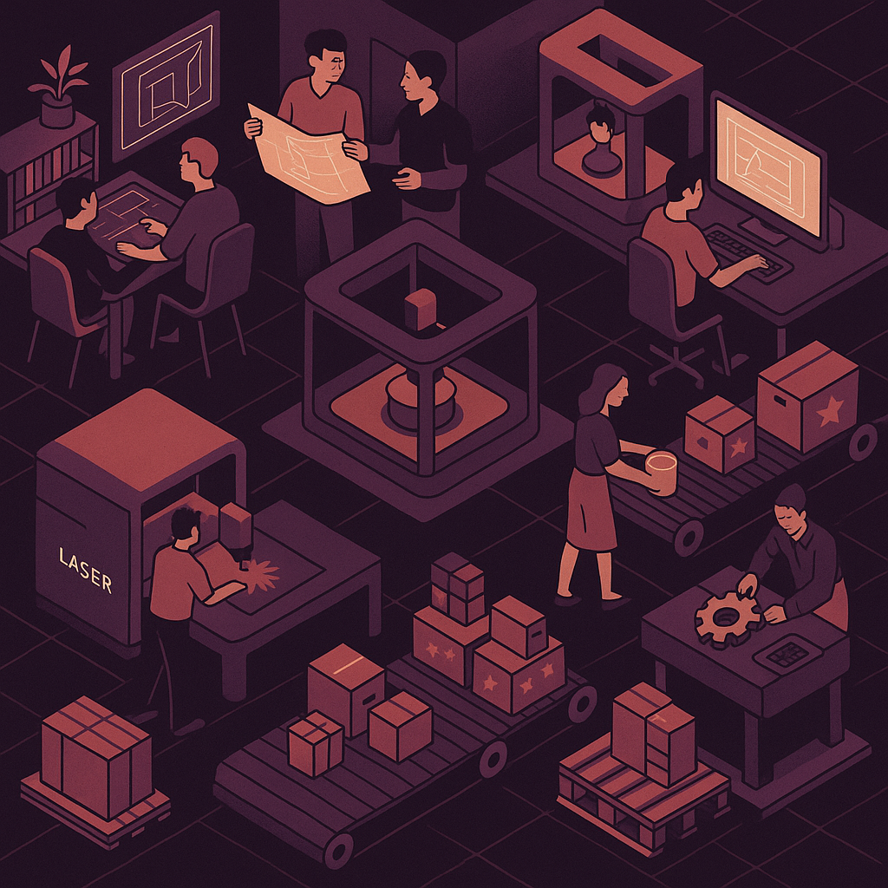

Corte Láser Online en Segundos
"con Tecnología Propia"
Sube tu archivo vectorial y obtén precio inmediato en cualquier material y grosor.
Sin esperas, sin correos, sin errores. JustLaserCut: nuestro software, tu nueva forma de fabricar.
Corte láser. Sin esperas. Sin rodeos.
Sabemos lo que es enviar un archivo, esperar presupuesto, discutir el material, volver a mandar el plano con ajustes... y perder media semana en algo que podría estar ya fabricado.
Por eso creamos JustLaserCut, nuestro propio software de presupuestado automático para corte láser. Y sí, lo usamos en Archicercle. Pero también lo ofrecemos a todo el mundo.
Pide precio. Ya.
Con JustLaserCut puedes subir cualquier archivo vectorial (.dxf, .ai, .svg, .pdf...), elegir material, grosor y acabado... y obtener precio inmediato sin tener que esperar a nadie.
Todo se calcula al instante. Y si te encaja, puedes fabricar desde tu escritorio. Así de simple.
Pedir presupuesto automático.Una herramienta pensada por fabricantes. No por tecnólogos.
JustLaserCut no lo diseñó una startup sin máquinas. Lo creamos nosotros, que llevamos años fabricando miles de pedidos reales.
Por eso resuelve lo que realmente importa:
- - ¿Este archivo está bien preparado?
- - ¿Cómo cambia el precio si cambio el material o el grosor?
- - ¿Cuánto cuesta fabricar esto ahora mismo?
- - ¿Cómo paso esto a producción sin errores?
¿Quieres cortar algo hoy? ¿O quieres vender más y mejor?
- Si tienes un archivo te damos precio al instante.
- Si tienes una empresa te damos una herramienta real para escalar.
Las dos opciones están abiertas.
Ni solo diseñamos. Ni solo fabricamos. Hacemos que las ideas se conviertan en objetos reales, bien pensados y bien hechos. Un estudio multidispl
Tecnología propia, pensada desde la experiencia real
Creamos este software porque nosotros mismos necesitábamos una solución así. Una que entienda cómo funcionan los planos de corte, que optimice materiales, que avise de errores, y que genere directamente un documento con todos los parámetros de corte definidos.
Y como funcionó tan bien para nosotros, ahora lo compartimos con otros. ¿Eres fabricante? ¿O ofrecer el servicio de corte láser sin perder tiempo? JustLaserCut también está pensado para ti. Lo puedes usar en tu empresa, taller o fábrica para:
Vender online sin correos ni presupuestos manuales.
Revisar automáticamente los archivos de tus clientes.
Optimizar materiales y minimizar errores.
Agilizar producción con un documento técnico listo para cortar.
Acceder a una red de colaboración que te permitirá absorber cualquier pedido que no pueda producir.
Tener tu propia gestión de clientes, facturas
Hablemos
Las marcas tienen que comunicarse con sus clientes. Y no sólo hablar, también tienen que escuchar y responder.
Hablar, dialogar, debatir, escuchar, ponerse en la piel del otro... no hemos inventado nada, es lo que siempre se ha llamado comunicación.
Y es lo que hacemos con nuestros clientes y con todo aquel que quiera conocernos y que lo conozcamos.
Aquí tiene nuestra dirección, nuestro teléfono y un correo de contacto. Le esperamos con las puertas (y las mentes) bien abiertas.
¡Nos vemos!